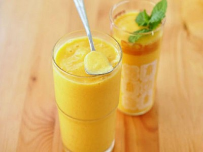

|  |
Smoothie name: Orange smoothie▸ Ingredients:
▸ Time to prepare: 15 minutes ▸ Approx quantity: 1 medium-size cup |
▸ How to make smoothies:
- Select the delicious oranges, you split the oranges squeezed through a sieve to remove the seeds and then get the juice, the remaining fruits are separated, removed
the fiber, only the orange cloves.
- Next, put the prepared mixture: squeezed oranges, fresh milk, orange cloves, yogurt, condensed milk, and crushed ice into a blender, puree, then pour into a drinking
glass, both refreshing and medium. increase resistance in summer.
▸ Calories and related information: